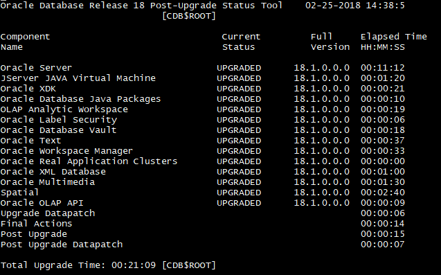

This was first published on https://www.dbi-services.com/blog/pdb-upgrade-from-12c-to-18c/ (2018-02-25)
Republishing here for new followers. The content is related to the versions available at the publication date.
.
Oracle 18c is out, in the Oracle Cloud, and the first thing I do with a new version is testing how long it takes to upgrade a previous version PDB by unplug/plug. Faster upgrade should be the benefit of having a slim dictionary where the system objects are reduced to metadata links and data links. However, it looks like upgrading the PDB dictionary still takes the same time as upgrading the CDB$ROOT.
The idea is to create a DBaaS service with a new CDB in 18.1 and plug a PDB coming from 12.2.0.1. Actually, I’m saying 18.1 but that may be 18.0 as I’m now lost in those version numbers. The cloud service was created with version: “18.0.0.0”, V$VERSION displays 18.1.0.0 for the release and 18.0.0.0 for the version:
Connected to:
Oracle Database 18c Enterprise Edition Release 18.0.0.0.0 - Production
Version 18.1.0.0.0My understanding is that the 18.0.0.0 is the version of the 18c dictionary, which will need a full upgrade only for 19c (19.0.0.0). And 18.1.0.0 is about the version, which will be incremented by Release Updates later.
I have an unplugged PDB that I plug into the new CDB:
SQL> create pluggable database PDB0 using '/u01/app/temp/PDB0.pdb';
Pluggable database PDB0 created.When I open it, I get a warning:
SQL> alter pluggable database pdb0 open;
ORA-24344: success with compilation error
24344. 00000 - "success with compilation error"
*Cause: A sql/plsql compilation error occurred.
*Action: Return OCI_SUCCESS_WITH_INFO along with the error code
Pluggable database PDB0 altered.
Then I check the PDB PLUG IN VIOLATIONS:
SQL> select * from pdb_plug_in_violations;
TIME NAME CAUSE TYPE ERROR_NUMBER LINE MESSAGE STATUS ACTION CON_ID
---- ---- ----- ---- ------------ ---- ------- ------ ------ ------
24-FEB-18 08.35.16.965295000 PM PDB0 OPTION ERROR 0 1 Database option APS mismatch: PDB installed version 12.2.0.1.0. CDB installed version 18.0.0.0.0. PENDING Fix the database option in the PDB or the CDB 1
24-FEB-18 08.35.16.966343000 PM PDB0 OPTION ERROR 0 2 Database option CATALOG mismatch: PDB installed version 12.2.0.1.0. CDB installed version 18.0.0.0.0. PENDING Fix the database option in the PDB or the CDB 1
24-FEB-18 08.35.16.966556000 PM PDB0 OPTION ERROR 0 3 Database option CATJAVA mismatch: PDB installed version 12.2.0.1.0. CDB installed version 18.0.0.0.0. PENDING Fix the database option in the PDB or the CDB 1
24-FEB-18 08.35.16.966780000 PM PDB0 OPTION ERROR 0 4 Database option CATPROC mismatch: PDB installed version 12.2.0.1.0. CDB installed version 18.0.0.0.0. PENDING Fix the database option in the PDB or the CDB 1
24-FEB-18 08.35.16.966940000 PM PDB0 OPTION ERROR 0 5 Database option CONTEXT mismatch: PDB installed version 12.2.0.1.0. CDB installed version 18.0.0.0.0. PENDING Fix the database option in the PDB or the CDB 1
24-FEB-18 08.35.16.967096000 PM PDB0 OPTION ERROR 0 6 Database option DV mismatch: PDB installed version 12.2.0.1.0. CDB installed version 18.0.0.0.0. PENDING Fix the database option in the PDB or the CDB 1
24-FEB-18 08.35.16.967250000 PM PDB0 OPTION ERROR 0 7 Database option JAVAVM mismatch: PDB installed version 12.2.0.1.0. CDB installed version 18.0.0.0.0. PENDING Fix the database option in the PDB or the CDB 1
24-FEB-18 08.35.16.967403000 PM PDB0 OPTION ERROR 0 8 Database option OLS mismatch: PDB installed version 12.2.0.1.0. CDB installed version 18.0.0.0.0. PENDING Fix the database option in the PDB or the CDB 1
24-FEB-18 08.35.16.967602000 PM PDB0 OPTION ERROR 0 9 Database option ORDIM mismatch: PDB installed version 12.2.0.1.0. CDB installed version 18.0.0.0.0. PENDING Fix the database option in the PDB or the CDB 1
24-FEB-18 08.35.16.967785000 PM PDB0 OPTION ERROR 0 10 Database option OWM mismatch: PDB installed version 12.2.0.1.0. CDB installed version 18.0.0.0.0. PENDING Fix the database option in the PDB or the CDB 1
24-FEB-18 08.35.16.967939000 PM PDB0 OPTION ERROR 0 11 Database option SDO mismatch: PDB installed version 12.2.0.1.0. CDB installed version 18.0.0.0.0. PENDING Fix the database option in the PDB or the CDB 1
24-FEB-18 08.35.16.968091000 PM PDB0 OPTION ERROR 0 12 Database option XDB mismatch: PDB installed version 12.2.0.1.0. CDB installed version 18.0.0.0.0. PENDING Fix the database option in the PDB or the CDB 1
24-FEB-18 08.35.16.968246000 PM PDB0 OPTION ERROR 0 13 Database option XML mismatch: PDB installed version 12.2.0.1.0. CDB installed version 18.0.0.0.0. PENDING Fix the database option in the PDB or the CDB 1
24-FEB-18 08.35.16.968398000 PM PDB0 OPTION ERROR 0 14 Database option XOQ mismatch: PDB installed version 12.2.0.1.0. CDB installed version 18.0.0.0.0. PENDING Fix the database option in the PDB or the CDB 1
24-FEB-18 08.35.16.971138000 PM PDB0 Parameter WARNING 0 1 CDB parameter compatible mismatch: Previous '12.2.0' Current '18.0.0' PENDING Please check the parameter in the current CDB 1
24-FEB-18 08.35.17.115346000 PM PDB0 VSN not match ERROR 0 1 PDB's version does not match CDB's version: PDB's version 12.2.0.1.0. CDB's version 18.0.0.0.0. PENDING Either upgrade the PDB or reload the components in the PDB. 4
The messages are clear: all components have a 12.2.0.1 dictionary and must be upgraded to a 18.0.0.0.0 one
The PDB is opened in MIGRATE mode with only RESTRICTED sessions enabled:
SQL> show pdbs
SP2-0382: The SHOW PDBS command is not available.
SQL> pdbs
CON_ID CON_NAME OPEN_MODE RESTRICTED STATUS FOREIGN_CDB_DBID FOREIGN_PDB_ID CREATION_TIME REFRESH_MODE REFRESH_INTERVAL LAST_REFRESH_SCN CDB_DBID CURRENT_SCN
------ -------- --------- ---------- ------ ---------------- -------------- ------------- ------------ ---------------- ---------------- -------- -----------
2 PDB$SEED READ ONLY NO NORMAL 1201448 2 11:42:25 NONE 942476327 3958500
3 CDB1PDB MOUNTED NORMAL 942476327 2 19:58:55 NONE 942476327 3958500
4 PDB0 MIGRATE YES NEW 941386968 3 20:34:50 NONE 942476327 3958500
Then, here is the upgrade for this newly plugged PDB0:
[oracle@DBaaS18c 18c]$ dbupgrade -c PDB0
Argument list for [/u01/app/oracle/product/18.0.0/dbhome_1/rdbms/admin/catctl.pl]
Run in c = PDB0
Do not run in C = 0
Input Directory d = 0
Echo OFF e = 1
Simulate E = 0
Forced cleanup F = 0
Log Id i = 0
Child Process I = 0
Log Dir l = 0
Priority List Name L = 0
Upgrade Mode active M = 0
SQL Process Count n = 0
SQL PDB Process Count N = 0
Open Mode Normal o = 0
Start Phase p = 0
End Phase P = 0
Reverse Order r = 0
AutoUpgrade Resume R = 0
Script s = 0
Serial Run S = 0
RO User Tablespaces T = 0
Display Phases y = 0
Debug catcon.pm z = 0
Debug catctl.pl Z = 0
catctl.pl VERSION: [18.0.0.0.0]
STATUS: [Production]
BUILD: [RDBMS_18.1.0.0.0_LINUX.X64_180103.1]
...The Build number mentions 18.1 built on 03-JAN-2018
Look at the summary to see the time it takes:
Oracle Database Release 18 Post-Upgrade Status Tool 02-24-2018 21:36:5
[PDB0]
Component Current Full Elapsed Time
Name Status Version HH:MM:SS
Oracle Server UPGRADED 18.1.0.0.0 00:13:37
JServer JAVA Virtual Machine UPGRADED 18.1.0.0.0 00:00:51
Oracle XDK UPGRADED 18.1.0.0.0 00:00:21
Oracle Database Java Packages UPGRADED 18.1.0.0.0 00:00:05
OLAP Analytic Workspace UPGRADED 18.1.0.0.0 00:00:11
Oracle Label Security UPGRADED 18.1.0.0.0 00:00:03
Oracle Database Vault UPGRADED 18.1.0.0.0 00:00:34
Oracle Text UPGRADED 18.1.0.0.0 00:00:11
Oracle Workspace Manager UPGRADED 18.1.0.0.0 00:00:18
Oracle Real Application Clusters UPGRADED 18.1.0.0.0 00:00:00
Oracle XML Database UPGRADED 18.1.0.0.0 00:00:49
Oracle Multimedia UPGRADED 18.1.0.0.0 00:01:03
Spatial UPGRADED 18.1.0.0.0 00:02:06
Oracle OLAP API UPGRADED 18.1.0.0.0 00:00:08
Upgrade Datapatch 00:00:05
Final Actions 00:00:09
Post Upgrade 00:00:02
Post Upgrade Datapatch 00:00:04
Total Upgrade Time: 00:20:47 [PDB0]
Database time zone version is 26. It is older than current release time
zone version 31. Time zone upgrade is needed using the DBMS_DST package.
Grand Total Upgrade Time: [0d:0h:21m:10s]

Here we see 18.1 but the important number is the time: 21 minutes… Once again, I see no improvement in the time to upgrade the PDB dictionary. This was on a service with 2 OCPU and I’ve run a whole CDB upgrade with a similar shape and the time to upgrade the CDB$ROOT is exaclty the same – see the screenshot on the right.
Finally I open the PDB:
SQL> alter pluggable database pdb0 open;
Pluggable database PDB0 altered.
And check that the violations are resolved:
SQL> select * from pdb_plug_in_violations where status'RESOLVED';
TIME NAME CAUSE TYPE ERROR_NUMBER LINE MESSAGE STATUS ACTION CON_ID
---- ---- ----- ---- ------------ ---- ------- ------ ------ ------
24-FEB-18 09.46.25.302228000 PM PDB0 OPTION WARNING 0 15 Database option RAC mismatch: PDB installed version 18.0.0.0.0. CDB installed version NULL. PENDING Fix the database option in the PDB or the CDB 4
Ok, I suppose I can ignore that as this is not RAC.
I’ve not seen a lot of differences in the dbupgrade output. There’s a new summary of versions before and after upgrade, which was not there in 12c:
DOC>#####################################################
DOC>#####################################################
DOC>
DOC> DIAG OS Version: linux x86_64-linux-thread-multi 2.6.39-400.211.1.el6uek.x86_64
DOC> DIAG Database Instance Name: CDB1
DOC> DIAG Database Time Zone Version: 31
DOC> DIAG Database Version Before Upgrade: 12.2.0.1.0
DOC> DIAG Database Version After Upgrade: 18.1.0.0.0
DOC>#####################################################
DOC>#####################################################
However, be careful with this information. The OS Version is not correct:
[opc@DB ~]$ uname -a
Linux DB 4.1.12-112.14.10.el6uek.x86_64 #2 SMP Mon Jan 8 18:24:01 PST 2018 x86_64 x86_64 x86_64 GNU/Linux
It seems that this info comes from Config.pm which is the OS version where the perl binaries were built…
In summary, nothing changes here about the time it takes to upgrade a PDB when plugged into a new CDB.
However, in 18c (and maybe only with next Release Updates) we should have a way to get this improved by recording the upgrade of CDB$ROOT and re-playing a trimmed version on the PDB dictionaries, in the same way as in Application Containers for application upgrades. We already see some signs of it with ‘_enable_cdb_upgrade_capture’ undocumented parameter and PDB_UPGRADE_SYNC database property. This may even become automatic when PDB is opened with the PDB_AUTO_UPGRADE property. But that’s for the future, and not yet documented.
For the moment, you still need to run a full catupgrd on each container, through catctl.pl called by the ‘dbupgrade’ script. Here on a 2 OCPU service, it takes 20 minutes.
{kind=link}